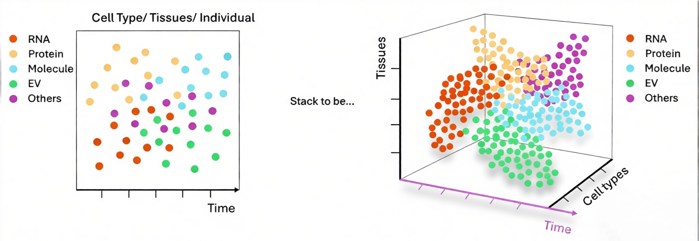

About
Aging is the most risk factor for neurodegenerative disease, yet the knowledge about how it emerges across cells, tissues, and organ systems is still unknow. Our lab is driven by a central hypothesis: aging is a spatially organized and systemically coordinated process, shaped by dynamic communication between cells. We propose that aging is not simply the accumulation of molecular damage within individual cells, but rather an emergent property of structured communication across cells, tissues, and organ systems. Understanding aging therefore requires identifying the rules and intercellular signaling by which information is transmitted, integrated, and acted upon across biological space.
Our work has contributed to this emerging paradigm by uncovering previously unrecognized modes of communication in the aging brain. We demonstrated that heat shock proteins (HSPs) can function as transferable signals, transmitted from aged neurons to glial cells via extracellular vesicles to modulate brain aging (Nature Neuroscience, 2025). We identified a role for the ion channel TMC1 in delaying neuronal aging through extrasynaptic GABA signaling (Science Advances, 2022). Together, these findings point to a model in which molecular information is actively propagated across cells and tissues to shape aging outcomes.
Building on this foundation, the Spatial Aging Biology & Disease Lab seeks to establish a new research direction at the interface of aging biology, neuroscience, and systems biology. Our goal is to define the principles of spatial aging biology: how cellular identity, spatial context, and inter-tissue communication jointly determine aging trajectories and disease vulnerability.
To achieve this, we integrate proximity labeling–based cell- and tissue-specific proteomics, multi-omics profiling, and large-scale genetic screening with molecular, biochemical, and computational approaches. Using complementary model systems including C. elegans, mouse models, and organoids, we aim to uncover conserved mechanisms of nervous system aging from a Spatial Aging Biology perspective.